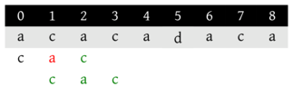
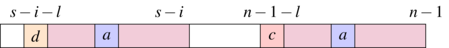

Algorithmique des textes
Source image : justgrims, https://www.flickr.com/photos/notbrucelee/8016192302
Sources
- Algorithms Robert Sedgewick, Kevin Wayne
- Éléments d’algorithmique D. Beauquier, J. Berstel, Ph. Chrétienne
- 125 Problems in Text Algorithms with Solutions Maxime Crochemore, Thierry Lecroq, Wojciech Rytter
1 Recherche dans un texte
1.1 Principe de la recherche
On s’intéresse ici au problème suivant :
La différence fondamentale entre ce problème et celui de la recherche d’un sous-tableau dans un tableau est le fait qu’on considère un alphabet fini et dont le nombre d’éléments est le plus souvent négligeable par rapport à la taille des chaînes de caractères. Cela permet d’effectuer des optimisations qui ne sont pas sans rappeler les tris linéaires comme le tri par comptage.
On parle alors d’algorithmique du texte pour désigner des algorithmes tirant partie de cette contrainte sur les données. La plupart des algorithmes que l’on présente peuvent ainsi s’adapter aisément au cas de tableaux dont les éléments sont pris dans un ensemble fini de petit cardinal.
Avant d’entamer ce chapitre, remarquons qu’il existe, outre l’alphabet usuel, trois alphabets très importants :
- celui des caractères ASCII usuels
- celui contenant les deux éléments 0 et 1, ce qui permet de travailler sur des recherche en binaire.
- et enfin, très important pour la biologie, l’alphabet à quatre lettres A, T, G et C correspondant aux bases d’un brin d’ADN et qui ouvre la porte à beaucoup d’applications en bio-informatique.
1.2 Algorithme naïf en force brute
Une solution naïve consiste à parcourir chaque position de \(s\) afin de tester si le motif est présent à partir de cette position.
Cela donne l’implémentation assez directe suivante :
exception Trouve of int
exception PasDeMotif
(* renvoie un booléen indiquant si m est présent
* dans s à l'indice i *)
let cherche_motif (m:string) (s:string) (i:int) : bool =
let p = String.length m in
try
for j = 0 to p-1 do
if s.[i+j] <> m.[j]
then raise PasDeMotif
done;
true
with PasDeMotif -> false
let recherche_naive m s =
let n = String.length s in
let p = String.length m in
try
for i = 0 to n-p do
if cherche_motif m s i
then raise (Trouve i)
done;
None
with Trouve i -> Some i/* recherche_naive(m,s) recherche le motif m dans la chaine
* s et renvoie l'indice de la première occurrence s'il est présent
* ou -1 sinon */
int recherche_naive(const char *m, const char *s)
{
int n = strlen(s);
int p = strlen(m);
for (int i = 0; i <= n-p; i++)
{
int j;
for (j = 0; j < p; j++)
{
if (s[i+j] != m[j])
break;
}
if (j == p)
return i;
}
return -1;
}def recherche_naive(motif, chaine):
'''Recherche le motif dans la chaine et renvoie l'indice de
la première occurrence du motif s'il est présent ou None sinon.'''
n, p = len(chaine), len(motif)
for i in range(n-p+1):
present = True
for j in range(p):
if chaine[i+j] != motif[j]:
present = False
break
if present:
return i
return NoneLa complexité temporelle en pire cas de cet algorithme correspond au maximum de comparaisons. On peut naturellement en déduire par majoration une borne en \(O(np)\) mais on peut remarquer qu’il est assez difficile d’obtenir un exemple concret, ce qui fait penser que ce pire cas est rare.
Ce qui va se passer dans une application usuelle de cet algorithme, c’est qu’au bout d’une ou deux comparaisons, on pourra invalider la position et passer à la suivante. On va alors avoir une complexité en \(O(n+p)\) en considérant en plus la validation du motif dans le cas où il est présent. Ici \(p \le n\) donc \(O(n+p) = O(n)\) mais c’est important de garder en tête cette complexité en \(O(n+p)\) qu’on retrouvera car elle s’appliquera à des algorithmes où on effectue un prétraitement sur le motif pour l’appliquer ensuite sur plusieurs chaînes.
1.3 Algorithme de Boyer-Moore
Dans un premier temps, on va présenter la variante usuelle de cet algorithme appelée algorithme de Boyer-Moore-Horspool. On présentera ensuite l’algorithme de Boyer-Moore en tant que tel.
1.3.1 Principe de Boyer-Moore-Horspool
Le principe de l’algorithme de Boyer-Moore-Horspool est d’effectuer une recherche du motif comme précédemment mais en partant de la fin. On va alors tenter de trouver des suffixes de plus en plus grand du motif. Si on trouve ainsi le motif, on renvoie la position. Sinon, c’est qu’on a lu dans \(s\) un mot de la forme \(x m'\) où \(m'\) est un suffixe strict de \(m\) mais \(x m'\) n’en est pas un. Si \(x\) n’est pas présent dans \(m\), alors on peut relancer la recherche juste après \(x\) dans \(s\). Si \(x\) est présent dans \(m\), on peut relancer la recherche en alignant ce caractère avec sa position la plus à droite dans \(m\).
On obtient ainsi une stratégie de saut qui en cas d’échec relance la recherche plus loin.
Voici un premier exemple où on effectue une recherche de \(abaa\) dans le mot \(aabababbaa\). Cette stratégie a permis d’éviter une recherche inutile à partir de l’indice 1.
1.3.2 Implémentation par table de saut
Pour réaliser ces sauts, on construit une table droite indexée par \(\Sigma\) et telle que droite[c] indique l’indice de l’occurrence la plus à droite dans le motif \(m\) du caractère \(c\), en ignorant le dernier caractère du motif.
Ainsi, dans l’exemple précédent du motif abaa, on obtient la table suivante :
c |
‘a’ | ‘b’ | ‘c’ | … |
|---|---|---|---|---|
droite[c] |
2 | 1 | \(\emptyset\) | … |
On a indiqué ici \(\emptyset\) quand un caractère de \(\Sigma\) n’est pas présent dans le motif, car il peut être présent dans \(s\).
Cette table contient donc de l’ordre de \(\Sigma\) éléments. On peut la réaliser par un tableau direct de taille \(|\Sigma|\) étant donné un ordre d’énumération. On peut aussi la réaliser par un dictionnaire, ce qui est plus économe en espace si le motif contient peu de lettres différentes. On a choisit ici, pour des raisons pédagogiques, de considérer la numérotation ASCII naturelle associées au caractère de cette table.
let taille_alphabet = 256
let calcule_droite (motif:string) : int option array =
(* Calcule le tableau droite associé au motif *)
let droite = Array.make taille_alphabet None in
let p = String.length motif in
for i = 0 to p-2 do
let j = p-2-i in
let c = motif.[j] in
if droite.(Char.code c) = None
then droite.(Char.code c) <- Some j
done;
droiteint taille_alphabet = 256; // on pourrait passer par un define
/* Calcule le tableau droite associé au motif
* le tableau renvoyé a été alloué, il devra être libéré après utilisation */
int *calcule_droite(char *motif)
{
int *droite = malloc(sizeof(int) * taille_alphabet);
int p = strlen(motif);
memset(droite, -1, sizeof(int) * taille_alphabet);
for (int i = 0; i < p-2; i++)
{
int j = p-2-i;
char c = motif[j];
if (droite[c] < 0)
droite[c] = j;
}
return droite;
}taille_alphabet = 256
def calcule_droite(motif):
'''Calcule le tableau droite associé au motif'''
droite = [ None ] * taille_alphabet
p = len(motif)
for i in range(p-1):
j = p-2-i # indice en partant de la fin
c = motif[j]
if droite[ord(c)] is None:
droite[ord(c)] = j
return droiteAfin d’implémenter l’algorithme lui-même, il est nécessaire de faire des calculs élémentaires mais précis pour déterminer le saut à effectuer. Si à la position \(i+j\) on a un échec après avoir lu le caractère c où droite[c] contient la valeur \(k\).
- Si \(k = \emptyset\), c’est que le motif ne pourra jamais être trouvé tant que ce caractère
csera présent. On relance donc la recherche juste après à l’indice \(i+j+1\).
Si \(k \ge j\), cela signifie que
cest présent plus à droite dans le motif, donc aligner cette occurrence ne permettrait pas d’avancer la recherche. Rien ne nous permet de savoir sicest présent ou non ailleurs dans le motif, on relance alors prudemment la recherche en \(i+1\).Sinon, on veut aligner ce
cavec le caractère correspondant du motif, si on relance à l’indice \(i'\), on souhaite ainsi avoir \(i' + k = i + j\) donc \(i ' = i + j - k\).
exception Difference
exception Trouve of int
let recherche_BMH (motif:string) (droite:int option array)
(chaine:string) : int option =
let n = String.length chaine in
let p = String.length motif in
let i = ref 0 in
try
while !i <= n-p do
try
for j = p-1 downto 0 do
if chaine.[!i+j] <> motif.[j]
then begin
let dec = match droite.(Char.code chaine.[!i+j]) with
| None -> j+1
| Some k when k < j -> j-k
| _ -> 1 in
i := !i + dec;
raise Difference
end
done;
raise (Trouve !i)
with Difference -> ()
done;
None
with Trouve k -> Some k/* cherche motif dans chaine en utilisant la table de saut précalculée
* droite. Renvoie l'indice de la première occurrence ou -1 s'il n'est pas
* présent */
int recherche_BMH(char *motif, int *droite, char *chaine)
{
int n = strlen(chaine);
int p = strlen(motif);
for(int i = 0; i <= n-p; )
{
bool present = true;
for (int j = p-1; j >= 0; j--)
{
if (chaine[i+j] != motif[j])
{
int k = droite[chaine[i+j]];
present = false;
if (k < 0)
i = i + j + 1;
else if (k < j)
i = i + j - k;
else
i = i + 1;
break;
}
}
if (present)
return i;
}
return -1;
}def recherche_BMH(motif, droite, chaine):
'''Cherche motif dans chaine en utilisant la table de saut
précalculée droite'''
n, p = len(chaine), len(motif)
i = 0
while i <= n-p:
present = True
for j in reversed(range(p)):
if chaine[i+j] != motif[j]:
present = False
k = droite[ord(chaine[i+j])]
if k is None:
i = i + j + 1
elif k < j:
i = i + j - k
else:
i = i + 1
break
if present:
return i
return None1.3.2.1 Correction
Tout d’abord, remarquons que la terminaison ne pose pas de questions dans la mesure où on le nouvel indice auquel on relance la recherche est toujours strictement plus grand que le précédent.
Au sujet de la correction, il suffit de s’assurer que les indices écartés correspondent nécessairement à des recherches infructueuses. Sans perte de généralité, on peut supposer que la recherche s’effectue depuis le premier indice de \(s\). Comme seul les sauts d’au moins deux indices sont ceux pour lesquels il est nécessaire de faire une preuve, cela correspond au cas où \(m = m_1 c m_2 d m_3 x\) et \(s = s_1 c m_3 s'\) avec \(c,d\) et \(x\) des caractères, \(d \neq c\) et \(c\) non présent dans \(m_2 d m_3\).
Ainsi, toute recherche démarrant à des indices inférieurs échouera systématiquement, au plus tard, en comparant le caractère \(c\) de \(c m_3\) avec un caractère du motif dans \(m_2 d m_3\) donc différent de \(c\).
1.3.2.2 Complexité
Tout d’abord, on remarque que la table de saut se construit en \(O(\max(|m|,|\Sigma|))\) pour un motif \(m\) sur un alphabet \(\Sigma\).
Sans chercher à rentrer dans les détails, on peut raisonnablement penser si l’alphabet contient assez de caractères que les motifs auront peu de répétitions et qu’ainsi, les sauts seront presque toujours maximaux, ce qui permet d’obtenir de l’ordre de \(\frac{n}{p}\) comparaisons où \(n\) est la longueur de la chaîne et \(p\) la longueur du motif.
Cependant, en pire cas, cet algorithme n’est pas meilleur que le précédent. Pour s’en convaincre, on va considérer un exemple proche de celui introduit poru l’algorithme naïf. Si on cherche \(b a^{p-1}\) dans \(a^n\) à l’indice \(i\), il est nécessaire d’attendre de comparer au caractère \(b\) pour constater un échec et devoir relancer l’algorithme à l’indice \(i+1\). On va donc faire ici aussi \((n-p+1)p = \Theta(np)\) comparaisons.
La complexite temporelle en pire cas de Boyer-Moore-Horspool est donc de \(O(np)\), même si, en pratique, elle est sous-linéaire.
1.3.3 Principe de Boyer-Moore
Considérons le cas suivant de l’algorithme précédent : on cherche abbcabc dans cbacbbcabc.
On remarque qu’en raison du fonctionnement de cet algorithme, on est forcé de faire de tous petits sauts et on est ramené à l’algorithme naïf. Cependant, après la première étape, on sait qu’on a lu un suffixe du motif bc qui est précédé d’un caractère a en sorte que bbc ne soit pas un suffixe du motif.
Il y a un autre endroit dans le motif où on peut trouver *bc avec * un autre caractère que a. On pourrait donc relancer la recherche en alignant cette occurrence de bc avec celle qu’on vient de lire. Cela revient à sauter directement à la dernière étape dans cet exemple :
Pour pouvoir réaliser ce décalage, il est nécessaire de calculer une nouvelle table en parcourant le motif pour identifier de telles apparitions de suffixes.
On peut aller plus loin en considérant également le plus long préfixe du motif qui soit un suffixe du suffixe considéré. Par exemple, pour le motif bcabc on remarque que bc étant un préfixe, on peut effectuer un saut comme dans l’exemple suivant :
1.3.3.1 Table des bons suffixes
Il est nécessaire d’introduire des définitions précises pour formaliser la stratégie qu’on vient de présenter. Dans le contexte des langages, on parle plus souvent de mot que de chaîne de caractères, qui sont un type de données permettant de les représenter. Un mot sur l’alphabet \(\Sigma\) est donc une suite finie \(a_1 \dots a_n\) de lettres dans l’alphabet. On note \(\mu\) l’unique mot vide, c’est-à-dire ne contenant aucune lettre. L’ensemble des mots sur \(\Sigma\) est noté \(\Sigma^*\). Si \(u\) et \(v\) sont des mots, \(uv\) est le mot obtenu par concaténation.
Des suffixes disjoints sont donc des suffixes précédés par des lettres différentes dans \(x\). On définit de même la notion de préfixes disjoints.
On considère un motif \(x = x_0 \dots x_{n-1}\) et on va reprendre, en la précisant, la description précédente. Se faisant, on va construire une table bonsuffixe appelée la table des bons suffixes du motif \(x\) et telle que, pour \(i \in \range{0}{n-1}\), bonsuffixe[i] donne le nombre de positions dont on doit décaler le motif vers la droite pour relancer la recherche après la lecture du suffixe \(x_{i+1} \dots x_{n-1}\).
Supposons qu’on vient de lire avec succès un suffixe propre \(u\). Ainsi \(x = x_0 \dots x_i u\) et on vient de lire dans la chaîne où on effectue la recherche \(a u\) avec \(a \neq x_i\).
- Soit il existe un autre suffixe \(b u v\) de \(x\) où \(b \neq x_i\) et alors on appelle bon suffixe pour \(u\) un tel suffixe de longueur minimale et on pose alors
bonsuffixe[i]\(=|v|\) - Sinon, on cherche \(v\) de longueur minimale tel que \(x\) soit un suffixe de \(u v\) et on pose également
bonsuffixe[i]\(=|v|\).
On remarque que si \(x\) est suffixe de \(u v\) et qu’on a également \(b u v'\) suffixe de \(x\), alors \(|uv| = |u|+|v| \ge |x| \ge |buv'| \ge |u|+|v'|\) donc \(|v| \ge |v'|\) ce qui permet de considérer le plus petit \(v\) sur l’ensemble des cas.
1.3.3.2 Table des suffixes
Afin de calculer efficacement bonsuffixe on va commencer par calculer la table des suffixes du motif, il s’agit de la table suffixe où suffixe[i] contient la longueur du plus long suffixe de \(x\) de la forme \(x_j \dots x_i\). Ainsi, si on note \(S_i\) les suffixes de cette forme, on a :
\[ \texttt{suffixe}[i] = \begin{cases} 0 & \text{si } S_i = \emptyset \\ \max \enscomp{|s|}{s \in S_i} & \text{sinon } \end{cases} \]
Nécessairement, suffixe[n-1]=n car \(x\) convient.
Il est possible de construire suffixe avec un simple parcours linéaire en tirant partie de l’information déjà calculée. Pour cela, on va remplir suffixe de droite à gauche.
A tout moment, on va conserver le meilleur suffixe rencontré, c’est-à-dire celui pour lequel on est allé le plus loin à gauche avant d’avoir un échec de comparaison. On note \(s\) la position la plus à droite de ce suffixe et \(k\) sa longueur, il s’agit donc de \(u = x_{s-k+1} ... x_s\) et il y a eu un échec de comparaison en \(x_{s-k}\). Par définition de suffixe on a suffixe[s]\(=k\). Le mot \(x\) s’écrit alors :
Ce qu’on peut représenter schématiquement ainsi :
Maintenant, on considère la position \(s-i\) où \(s > s-i > s-k\), cela signifie qu’on cherche un suffixe depuis une position interne au mot \(u\) de gauche. Le point clé permettant d’obtenir un algorithme linéaire est de remarquer que la situation est la même que dans le mot \(u\) de droite. Or, comme on procède de gauche à droite, on a déjà calculé la valeur correspondante suffixe[n-1-i]. Là, on a deux cas :
soit quand on a cherché le plus grand suffixe à partir de \(n-i\), on s’est heurté à une erreur de comparaison à la position \(n-k\). Dans ce cas, on a
suffixe[n-1-i]\(=k-i\) et on peut regarder, en partant de la position \(s-k\), si on peut prolonger le suffixe finissant à la position \(s-i\).Pour effectuer ce prolongement, il suffit de comparer, caractère par caractère, vers la gauche en partant de la position \(s-k\). On aboutira alors à une nouvelle position du suffixe finissant le plus à gauche qui finira en \(s-i\).
Remarquons qu’il n’est pas nécessaire que \(s-i-l \neq s-k\). C’est-à-dire que même si \(a\) ne permet pas de prolonger le suffixe déduit de la position \(n-i\), on considère tout de même que la nouvelle position de référence est \(s-i\). On en déduit également la valeur
suffixe[s-i]\(=l\).soit
suffixe[n-1-i]\(= p \neq k-i\) et alorssoit \(p < k-i\), on a alors poru ce suffixe un échec dans \(u\), ce qui limite de la même manière la valeur en \(s-i\) :
suffixe[s-i]\(=p\).soit \(p > k-i\), donc on doit avoir un \(b\) après avoir le suffixe dans \(u\) depuis \(s-i\) pour le prolonger, or, c’est impossible car il y a un \(a \neq b\). Ainsi, le suffixe est limité par \(u\) :
suffixe[s-i]\(=k-i\).
Il reste à traiter le cas où \(s - i \le s-k\), ce qui revient à considérer qu’on a dépassé le précédent suffixe pouvant apporter une information. On procède donc naïvement pour trouver le plus grand suffixe depuis cette position.
On en déduit l’implémentation suivante :
let calcule_suffixe (x:string) : int array =
(* Prend en entrée un mot non vide x et renvoie son tableau de suffixe *)
let n = String.length x in
let suffixe = Array.make n (-1) in
suffixe.(n-1) <- n;
let plus_a_gauche = ref (n-1) in
let depart = ref (-1) in
for j = n-2 downto 0 do
if !plus_a_gauche < j
&& suffixe.(n-1- !depart+j) <> j - !plus_a_gauche
then suffixe.(j) <- min suffixe.(n-1- !depart+j) (j - !plus_a_gauche)
else begin
plus_a_gauche := min j !plus_a_gauche;
depart := j;
while !plus_a_gauche >= 0
&& x.[!plus_a_gauche] = x.[n-1-j + !plus_a_gauche] do
plus_a_gauche := !plus_a_gauche - 1
done;
suffixe.(j) <- !depart - !plus_a_gauche
end
done;
suffixe/* Calcule le tableau suffixe associé au mot x
* le tableau renvoyé a été alloué, il devra être libéré après utilisation */
int *calcule_suffixe(char *x)
{
int n = strlen(x);
int *suffixe = malloc(sizeof(int) * n);
int plus_a_gauche = n-1;
int depart = -1;
memset(suffixe, -1, sizeof(int) * n);
suffixe[n-1] = n;
for (int j = n-2; j >= 0; j--)
{
if (plus_a_gauche < j
&& suffixe[n-1-depart+j] != j-plus_a_gauche)
suffixe[j] = MIN(suffixe[n-1-depart+j], j-plus_a_gauche);
else {
plus_a_gauche = MIN(plus_a_gauche, j);
depart = j;
while (plus_a_gauche >=0
&& x[plus_a_gauche] == x[n-1-j+plus_a_gauche])
plus_a_gauche--;
suffixe[j] = depart - plus_a_gauche;
}
}
return suffixe;
}def calcule_suffixe(x):
'''Prend en entrée un mot non vide x et renvoie son tableau de suffixe'''
n = len(x)
suffixe = [ None ] * n
suffixe[n-1] = n
plus_a_gauche = n-1
depart = None
for j in reversed(range(0,n-1)):
if plus_a_gauche < j and suffixe[n-1-depart+j] != j-plus_a_gauche:
suffixe[j] = min(suffixe[n-1-depart+j],j-plus_a_gauche)
else:
plus_a_gauche = min(plus_a_gauche, j)
depart = j
while plus_a_gauche >= 0 \
and x[plus_a_gauche] == x[n-1-j+plus_a_gauche]:
plus_a_gauche = plus_a_gauche - 1
suffixe[j] = depart - plus_a_gauche
return suffixeOn remarque que dans ce code, plus_a_gauche ne peut que diminuer, on effectue donc au plus \(n\) itérations dans la boucle while pour tout l’algorithme. Donc, en considérant la boucle for, on effectue au plus \(2n\) comparaisons de caractères : au plus une pour chaque itération de la boucle for pour voir si on entre dans le while, puis en tout au plus \(n\) avant de sortir du while.
L’algorithme qu’on a obtenue est bien linéaire en \(|x|\).
1.3.3.3 Obtention de bonsuffixe à partir de suffixe
On reprend maintenant le calcul de bonsuffixe[i] dans le mot \(x = x_0 \dots x_{n-1}\).
On cherche à obtenir des suffixe de la forme \(b u v\) de \(x\) où \(b \neq x_i\) et \(u = x_{i+1} \dots x_{n-1}\) est un suffixe de \(x\). Mais si suffixe[k]\(=n-1-i\) cela signifie que ce suffixe est exactement \(u\) et qu’il est soit préfixe, soit précédé d’une lettre différente de \(x_i\), sinon \(n-1-i\) ne serait pas maximal.
On a donc \[ \begin{array}{rcl} \texttt{bonsuffixe}[n-1-i] & = & \min \enscomp{n-1-k}{\texttt{suffixe}[k] = n-1-i} \\ & = & n -1 - \max \enscomp{k}{\texttt{suffixe}[k] = n-1-i} \end{array} \] On remarque qu’on peut ainsi faire croitre \(k\) et poser : \[\texttt{bonsuffixe}[n-1-\texttt{suffixe}[k]] = n-1-k\] On a aura alors naturellement, à la fin de la boucle, la valeur minimale placée en dernier.
Reste à considérer les valeurs non remplies ainsi dans le tableau bonsuffixe. Elles correspondent aux positions \(i\) telles qu’il n’existe pas de suffixe de la forme \(b u v\). On doit donc chercher un mot \(uv\) de longueur minimale dont \(x\) est suffixe. Mais \(u\) étant un suffixe de \(x\), cela revient à considérer les bords de \(x\). La table suffixe permet également de détecter les bords : si \(x_0 ... x_k\) est un bord c’est que suffixe[k]\(=k+1\).
Soit \(k < n-1\) maximal vérifiant cette condition. Pour tout \(u = x_{i+1} \dots x_n\) suffixe de \(x\), pour qu’il ait \(x_0 \dots x_k\) comme suffixe, il faut qu’il soit strictement plus long (sinon on est dans le cas précédent), donc que \(n-i > k+1 \iff i < n-1-k\). Dans ce cas, \(x\) est alors suffixe de \(u v\) où \(v = x_{k+1} \dots x_{n-1}\) donc \(|v|=n-1-k\). Les \(k\) plus petits ne pourront alors que faire augmenter \(|v|\), on peut ainsi poser bonsuffixe[i]\(=n-1-k\).
On en déduit un remplissage en parcourant les \(k\) dans l’ordre décroissant de \(n-2\) à \(0\), tout en maintenant l’indice \(i\) de la prochaine valeur à remplir dans bonsuffixe. Dès qu’on détecte un bord, on place \(n-1-k\) jusqu’à ce que \(i \ge n-1-k\).
En sortie de boucle, il est possible que \(i < n\) donc qu’il reste des valeurs à remplir. On remarque dans ce cas là que pour que \(x\) soit un suffixe de \(u v\) il faut que \(v = x\). On a donc pour ces valeurs restantes bonsuffixe[i]\(=n\).
Comme ce second cas est toujours plus long que le premier quand les deux se produisent en \(i\), on implémente successivement les remplissages de sorte à obtenir la valeur minimum. On en déduit le programme suivant :
let calcule_bonsuffixe (x:string) : int array =
(* Prend en entrée un mot non vide x et renvoie son tableau de suffixe *)
let n = String.length x in
let suffixe = calcule_suffixe x in
let bonsuffixe = Array.make n n in
let suivant = ref 0 in
for k = n-2 downto 0 do
if suffixe.(k) = k+1 (* c'est un bord *)
then begin
for i = !suivant to n-2-k do
bonsuffixe.(i) <- n-1-k
done;
suivant := n-1-k
end
done;
for k = 0 to n-2 do
bonsuffixe.(n-1-suffixe.(k)) <- n-1-k
done;
bonsuffixe/* Calcule le tableau suffixe associé au mot x
* le tableau renvoyé a été alloué, il devra être libéré après utilisation */
int *calcule_bonsuffixe(char *x)
{
int n = strlen(x);
int *suffixe = calcule_suffixe(x);
int *bonsuffixe = malloc(sizeof(int) * n);
int suivant = 0;
memset(bonsuffixe, n, sizeof(int) * n);
for (int k = n-2; k >= 0; k--)
{
if (suffixe[k] == k+1) // bord
{
for (int i = suivant; i < n-1-k; i++)
bonsuffixe[i] = n-1-k;
suivant = n-1-k;
}
}
for (int k = 0; k < n-1; k++)
bonsuffixe[n-1-suffixe[k]] = n-1-k;
free(suffixe);
return bonsuffixe;
}def calcule_bonsuffixe(x):
'''Prend en entrée un mot non vide x et renvoie son tableau de suffixe'''
n = len(x)
suffixe = calcule_suffixe(x)
bonsuffixe = [ n ] * n
suivant = 0
for k in reversed(range(0,n-1)):
if suffixe[k] == k+1: # c'est un bord
for i in range(suivant,n-1-k):
bonsuffixe[i] = n-1-k
suivant = n-1-k
for k in range(0,n-1):
bonsuffixe[n-1-suffixe[k]] = n-1-k
return bonsuffixeIl est facile de constater que cet algorithme est de complexité temporelle linéaire en \(|x|\).
1.3.3.4 Algorithme de Boyer-Moore
On incorpore naturellement la table precédente à l’algorithme de Boyer-Moore en choisissant le meilleur décalage entre cette table et la stratégie précédente.
let recherche_BM (motif:string)
(droite:int option array) (bonsuffixe:int array)
(chaine:string) : int option =
let n = String.length chaine in
let p = String.length motif in
let i = ref 0 in
try
while !i <= n-p do
try
for j = p-1 downto 0 do
if chaine.[!i+j] <> motif.[j]
then begin
let dec = match droite.(Char.code chaine.[!i+j]) with
| None -> j+1
| Some k when k < j -> j-k
| _ -> 1 in
i := !i + max dec bonsuffixe.(j);
raise Difference
end
done;
raise (Trouve !i)
with Difference -> ()
done;
None
with Trouve k -> Some k/* cherche motif dans chaine en utilisant les tables de saut précalculées
* droite et bonsuffixe. Renvoie l'indice de la première occurrence ou -1 s'il n'est pas
* présent */
int recherche_BM(char *motif, int *droite, int *bonsuffixe, char *chaine)
{
int n = strlen(chaine);
int p = strlen(motif);
for(int i = 0; i <= n-p; )
{
bool present = true;
for (int j = p-1; j >= 0; j--)
{
if (chaine[i+j] != motif[j])
{
int k = droite[chaine[i+j]];
int dec = 1;
present = false;
if (k < 0)
dec = j + 1;
else if (k < j)
dec = j - k;
i = i + MAX(dec, bonsuffixe[j]);
break;
}
}
if (present)
return i;
}
return -1;
}def recherche_BM(motif, droite, bonsuffixe, chaine):
'''Cherche motif dans chaine en utilisant les tables de sauts
droite et bonsuffixe'''
n, p = len(chaine), len(motif)
i = 0
while i <= n-p:
present = True
for j in reversed(range(p)):
if chaine[i+j] != motif[j]:
present = False
k = droite[ord(chaine[i+j])]
if k is None:
dec = j + 1
elif k < j:
dec = j - k
else:
dec = 1
dec = max(dec, bonsuffixe[j])
i = i + dec
break
if present:
return i
return NoneSupposons que le motif est de longueur \(p\), que la chaîne dans laquelle on recherche est de longueur \(n\) et que la taille de l’alphabet est une constante indépendante des entrées. La première partie de l’algorithme consiste à construire les tables de sauts, comme on l’a vu, elle est en complexité en temps et en espace en pire cas en \(O(p)\).
On admet que l’algorithme Boyer-Moore complet, étant donné les deux tables de saut et d’autres modifications mineures non présentées ici, est en complexité temporelle en pire cas en \(O(n)\).
Il est assez raisonnable de penser que soit \(p \le n\) quand on effectue une recherche, soit on compte chercher un même motif dans plusieurs textes et on réutilise ainsi les tables de sauts. Il n’est donc pas forcément très pertinent de parler de la complexité globale de l’algorithme, mais lorsqu’on le fait, on dit qu’elle est en \(O(p+n)\). On rappelle ici le rôle de l’addition dans les complexités qui fait référence à la succession de deux traitements, un en \(O(p)\) suivi d’un en \(O(n)\).
1.4 Algorithme de Rabin-Karp
1.4.1 Principe
L’algorithme de Rabin-Karp est un algorithme de recherche d’un motif dans un texte qui utilise une notion d’empreinte pour déterminer, en temps constant, si il est probable que la position actuelle corresponde à une occurrence du motif.
Pour cela, si on cherche un motif de longueur \(p\) sur l’alphabet \(\Sigma\), on considère une fonction de hachage \(h : \Sigma^p \rightarrow X\). Les éléments de l’ensemble \(X\) sont appelés des empreintes et on suppose que l’égalité entre deux empreintes se vérifie en temps constant contrairement à l’égalité dans \(\Sigma^p\) qui se vérifie en \(O(p)\) dans le pire des cas. Le plus souvent, on choisit pour \(X\) un type entier machine.
Bien qu’il soit normalement aussi coûteux de calculer l’image par \(h\) d’une sous-chaîne de longueur \(p\) que de tester l’égalité entre cette sous-chaîne et le motif, le point essentiel de l’algorithme de Rabin-Karp est d’utiliser une fonction de hachage permettant un calcul incrémental en temps constant :
Ici, on considère donc, pour \(a, b \in \Sigma\), une fonction de mise à jour \(\delta_{a,b} : X \rightarrow X\) telle que pour tout \(c_2,\dots,c_p \in \Sigma\) on ait \(\delta_{a,b}(h(ac_2 \dots c_p)) = h(c_2\dots c_p b)\).
L’algorithme de Rabin-Karp procède alors ainsi pour chercher \(m\) de longueur \(p\) dans la chaîne \(s = c_0 \dots c_{n-1}\) où \(n \ge p\) :
calcul de \(e_m = h(m)\) et \(e = h(c_0..c_{p-1})\).
Pour \(i\) allant de \(0\) à \(n-p\) :
- Si \(e_m = e\), on renvoie un succès pour la recherche à la position \(i\) si \(m = c_i \dots c_{i+p-1}\)
- si \(i<n-p\) on met à jour l’empreinte \(e \leftarrow \delta_{c_i,c_{i+p}}(e)\).
La complexité temporelle liée à la gestion des empreintes est donc en \(O(n+p) = O(n)\) car \(n \ge p\). Par contre, pour calculer la complexité liée à la recherche \(m = c_i \dots c_{i+p-1}\), il est nécessaire d’estimer la proportion de faux positifs, c’est-à-dire de positions \(i\) telles que \(e_m = e\) mais \(m \neq c_i \dots c_{i+p-1}\). On va voir dans la partie suivante qu’on peut supposer qu’elle est négligeable, ce qui permet de considérer que l’algorithme de Rabin-Karp est linéaire.
1.4.2 Choix d’une fonction de hachage
Réaliser une bonne fonction de hachage est une question très complexe qui dépasse le cadre du cours d’informatique de MPI. Cependant, il est possible de réaliser ici une fonction de hachage répondant aux contraintes de Rabin-Karp assez facilement.
Pour cela, on considère que les caractères sont des entiers compris entre 0 et 255, ce qui correspond au type des caractères non signés sur un octet. On peut alors identifier une chaîne de longueur \(p\) avec un nombre entre \(0\) et \(r^{p} - 1\) où \(r =2^8\), on note ainsi \[ P(c_0\dots c_{p-1}) = \sum_{i=0}^{p-1} c_i r^{p-1-i} = c_0 r^{p-1} + c_1 r^{p-2} + \dots + c_{p-1} \]
On considère de plus un entier premier \(q\) et on pose \(h(s) = P(s) \mod q\) c’est-à-dire le reste de \(P(s)\) dans la division euclidienne par \(q\). On peut ainsi définir \(\delta_{a,b}(e) = (r (e - a r^{p-1}) + b) \mod q\).
Si on précalcule \(r^{p-1} \mod q\) il suffit d’un nombre d’opération constant, et indépendant de \(p\), pour calculer la nouvelle empreinte à l’aide de \(\delta_{a,b}\).
Le point essentiel est alors de déterminer un nombre premier \(q\) tel qu’il soit peu probable d’obtenir des faux positifs. Une analyse mathématique permet d’affirmer que chaque élément de \([|0;q-1|]\) a de l’ordre de \(\frac{r^p}{q}\) antécédents par \(h\). Ainsi, si on choisit deux chaînes aléatoirement dans \(\Sigma^p\), il y aura collision avec probabilité proche de \(\frac{1}{q}\). En considérant \(q\) proche de la taille maximale pour le type entier considéré, on minimise donc cette probabilité.
Le programme suivant implémente naïvement les calculs de \(h\) et de \(\delta_{a,b}\) :
let hash r q s =
let p = ref 1 in
let e = ref 0 in
for i = String.length s - 1 downto 0 do
e := (!p * (Char.code s.[i]) + !e) mod q;
p := (r * !p) mod q
done;
!e
let delta r q rp a b e = (* rp est r^(p-1) mod q *)
(r * (e - rp * (Char.code a)) + Char.code b) mod qint64_t hash(int64_t r, int64_t q, char *s, int n)
{
int64_t p = 1;
int64_t e = 0;
for (int i = n-1; i >= 0; i--)
{
e = (p * s[i] + e) % q;
p = (r * p) % q;
}
return e;
}
int64_t delta(int64_t r, int64_t q, int64_t rp,
char a, char b, int64_t e)
{
return (r * (e - rp * a) + b) % q;
}def hash(r,q,s):
e = 0
p = 1
for c in reversed(s):
e = (ord(c) * p + e) % q
p = (r * p) % q
return e
def delta(r,q,rp,a,b,e):
return (r * (e - rp * ord(a)) + ord(b)) % q1.4.3 Implémentation
Une implémentation directe de l’algorithme de Rabin-Karp est donnée dans le programme qui suit. On se sert ici du caractère paresseux du && pour n’effecuter le test coûteux d’égalité des chaînes qu’en cas d’égalité des empreintes.
exception Trouve of int
let rabin_karp m s =
let n = String.length s in
let p = String.length m in
let r = 256 in
let q = 0x7fffffff in (* 2^(31)-1 *)
let rp = pow r (p-1) q in
let me = hash r q m in
let e = ref (hash r q (String.sub s 0 p)) in
try
for i = 0 to n-p+1 do
if me = !e && m = String.sub s i p
then raise (Trouve i);
if i+p < n then e := delta r q rp s.[i] s.[i+p] !e
done; None
with Trouve k -> Some kint rabin_karp(char *m, char *s)
{
const int64_t r = 256;
const int64_t q = 0x7fffffff;
const int p = strlen(m);
const int n = strlen(s);
const int64_t rp = powmod(r,p-1,q);
const int64_t me = hash(r,q,m,p);
int64_t e = hash(r,q,s,p);
for (int i=0; i <n-p+1; i++)
{
if (me == e && strncmp(m,(s+i),p) == 0)
return i;
if (i+p < n)
e = delta(r,q,rp,s[i],s[i+p],e);
}
return -1;
}def rabin_karp(m, s):
p, n = len(m), len(s)
r, q = 256, 0x7fffffff
rp = (r ** (p-1)) % q
me, e = hash(r,q,m), hash(r,q,s[:p])
for i in range(0,n-p+2):
if me == e and m == s[i:i+p]:
return i
if i+p < n:
e = delta(r,q,rp,s[i],s[i+p],e)
return NoneSi on suppose qu’il est improbable d’obtenir un faux positif, il est possible de renvoyer un succès dès que les empreintes sont égales. L’avantage d’une telle version est alors d’être un algorithme sans retour sur les données. C’est-à-dire qu’il n’est pas nécessaire de garder en mémoire ou de réaccéder à un caractère.
1.4.4 L’algorithme originel de Rabin et Karp
Si on regarde l’article originel de Rabin et Karp décrivant cette méthode, on peut être étonné du fait que la méthode précédemment décrite était considérée comme déjà connue dans la littérature par les auteurs. En fait, ce qu’ils décrivent et annoncent comme étant novateur est l’utilisation d’un algorithme probabiliste en choisissant aléatoirement une fonction de hachage à chaque lancement de l’algorithme. En pratique, il s’agit de choisir aléatoirement un nombre premier \(q\) parmi un ensemble précalculé de nombres premiers.
L’algorithme que l’on vient de décrire a un pire cas qui est très improbable car on considère que la probabilité d’un faux positif est à peu près de \(1/q\), donc moins de \(5.10^{-10}\) pour \(q = 2^{31}-1\). Le problème ici est la notion de probabilité sur les entrées : est-on certain que l’algorithme recevra une entrée choisie uniformément ? Rabin et Karp parlent d’un adversaire intelligent qui aurait connaissance de la fonction de hachage choisie pour produire des entrées en pire cas. On pourrait ainsi imaginer une attaque sur serveur effectuant une recherche avec Rabin-Karp suite à l’entrée d’un utilisateur. Un adversaire pourrait construire une entrée en pire cas et tenter de surcharger le serveur en l’effectuant de manière répétée.
Pour bien mettre en lumière ce phénomène, nous allons ici construire, dans un cas très simple de fonction de hachage, une telle chaîne problématique. Pour cela, considérons la fonction de hachage précédemment décrite dans le cas de motif de taille 2, avec \(\Sigma\) contenant les lettres de a à z, \(r = 26\) et \(q = 17\). On considère une recherche du motif aa dont l’empreinte est 0, la même que celle des chaînes ar et ra. On peut donc considérer la chaîne arar...ar qui produira un faux positif à chaque étape.
2 Compression
2.1 Principe
On s’intéresse ici à la compression parfaite d’un texte, c’est-à-dire, étant donné un alphabet fixé \(\Sigma\), qu’on cherche à réaliser un couple de fonctions \(\mathop{comp}, \mathop{dec} : \Sigma^* \rightarrow \Sigma^*\) telles que :
- pour tout mot \(m \in \Sigma^*\), \(\mathop{dec} (\mathop{comp}(m)) = m\)
- pour la plupart des mots \(m\) qui correspondent aux données qu’on cherche à compresser, \(|\mathop{comp}(m)| < |m|\).
2.2 Algorithme d’Huffman
La définition et la construction de l’arbre de Huffman ont été présentées au paragraphe Algorithme d’Huffman - Compression. On va s’intéresser ici au processus complet permettant de compresser et décompresser des fichiers avec cet algorithme.
2.2.1 Calcul de la table d’occurences
Par souci d’efficacité, on calcule une table d’occurences pour l’ensemble des valeurs d’octets entre 0 et 255. Il suffit alors de parcourir le fichier pour incrémenter les valeurs correspondant aux octets lus.
let table_occurrences nomdefichier =
let fichier = open_in_bin nomdefichier in
let occurrences = Array.make 256 0 in
begin
try
while true do
let c = input_byte fichier in
occurrences.(c) <- occurrences.(c) + 1;
done
with End_of_file -> ()
end;
close_in fichier;
occurrencesERROR: src/algorithmique/../../snippets/algorithmique/huffman.c does not existERROR: src/algorithmique/../../snippets/algorithmique/huffman.py does not exist2.2.2 Sérialisation de l’arbre de Huffman
Afin de décompresser, il est nécessaire de connaître l’arbre de Huffman donnant le code préfixe. Pour cela, il faut stocker cet arbre dans le fichier comme une série d’octet, on parle de sérialisation. Cette notion sera prolongée dans le chapitre FIXME.
On choisit ici la représentation récursive repr(a) de l’arbre a définie ainsi :
- Si
a = Noeud(g,d),repr(a) = 0 repr(g) repr(d) - Si
a = Feuille(c),repr(a) = 1 c.
La lecture et l’écriture de la séralisation s’effectue alors simplement par récurrence :
let rec output_arbre f a =
match a with
| Noeud (x, y) -> begin
output_byte f 0;
output_arbre f x;
output_arbre f y
end
| Feuille c -> begin
output_byte f 1;
output_byte f c
end
let rec input_arbre f =
let code = input_byte f in
match code with
| 0 -> let g = input_arbre f in
let d = input_arbre f in
Noeud(g,d)
| _ -> Feuille (input_byte f)ERROR: src/algorithmique/../../snippets/algorithmique/huffman.c does not existERROR: src/algorithmique/../../snippets/algorithmique/huffman.py does not exist2.2.3 Écriture dans un fichier un bit à la fois
Le propre de l’algorithme de Huffman est d’associer à chaque caractère un codage binaire de longueur variable. Afin de pouvoir écrire ce codage dans un fichier, il est nécessaire de grouper les bits par paquet de huit (octet en français, byte en anglais).
Ainsi, par exemple, si on a le codage suivant :
| c | 'a' |
'b' |
'c' |
|---|---|---|---|
| code(c) | 0 | 100 | 101 |
et qu’on doit encoder "abbaca", on obtient le mot binaire 010010001010 qu’on complète avec des 0 à la fin et qu’on sépare en octets : 01001000 10100000. On obtient donc les deux octets, convertis en décimal, 72 et 160. Ce sont eux qu’on va écrire dans un fichier.
Une technique usuelle pour cela est de garder un accumulateur qui correspond à l’octet en train d’être construit ainsi que le nombre de bits qui ont été accumulé. Dès qu’on accumulé 8 bits, on peut construire l’octet, l’écrire dans le fichier, puis reinitialiser ces variables.
Quand on rajoute un bit \(b\) à l’accumulateur, on veut passer de \(acc = b_1 \dots b_k\) à \(b_1 \dots b_k b = 2 acc + b\).
On en déduit l’implémentation assez directe suivante :
type out_channel_bits = {
o_fichier : out_channel;
mutable o_accumulateur : int;
mutable o_bits_accumules : int
}
let open_out_bits fn =
{ o_fichier = open_out_bin fn; o_accumulateur = 0; o_bits_accumules = 0 }
let output_bit f b =
if f.o_bits_accumules = 8
then begin
output_byte f.o_fichier f.o_accumulateur;
f.o_accumulateur <- 0;
f.o_bits_accumules <- 0
end;
if b
then f.o_accumulateur <- f.o_accumulateur + 1 lsl f.o_bits_accumules;
f.o_bits_accumules <- 1 + f.o_bits_accumulesERROR: src/algorithmique/../../snippets/algorithmique/bitpacking.c does not existclass Bitpacking:
'''La classe Bitpacking se comporte comme un fichier Python
tout en fournissant des méthodes spécifiques à la lecture
et à l'ecriture de bit.'''
def __init__(self, filename, mode):
self.file = open(filename, mode)
self.accumulateur = 0
self.bits_accumules = 0
self.input = mode[0] == 'r'
if self.input:
self.init_input()
def write_bit(self, b):
if self.bits_accumules == 8:
self.write(bytes([self.accumulateur]))
self.accumulateur = 0
self.bits_accumules = 0
self.accumulateur = 2 * self.accumulateur \
+ (1 if b else 0)
self.bits_accumules += 1Il reste à traiter la question des zéros finaux, si l’accumulateur contient \(k\) bits au moment de la fermeture du fichier, où \(0 < k < 8\), il faut ajouter \(8-k\) zéros. On appelle cela du padding de l’anglais pour rembourrage. Ici, cela correspond à faire un décalage binaire vers la gauche d’autant (shift left en anglais). Comme il sera nécessaire de se souvenir que ces zéros ne sont pas signifiants à la lecture, on rajoute un octet final contenant cette valeur \(k\).
On obtient alors la fonction de fermeture de fichier suivante :
let close_out_bits f =
if f.o_bits_accumules = 0
then output_byte f.o_fichier 0
else begin
let padding = 8 - f.o_bits_accumules in
output_byte f.o_fichier (Int.shift_left f.o_accumulateur padding);
output_byte f.o_fichier padding
end;
close_out f.o_fichierERROR: src/algorithmique/../../snippets/algorithmique/bitpacking.c does not exist def close(self):
if not self.input:
self.close_output()
self.file.close()
def close_output(self):
if self.bits_accumules == 0:
self.file.write(b'\x00')
else:
padding = 8 - self.bits_accumules
self.file.write(bytes([
self.accumulateur << padding,
padding ]))Pour la lecture, on procède de même en faisant attention à deux points :
- on va lire les bits dans l’octet de la gauche vers la droite, c’est-à-dire du bit de poids le plus fort au bit de poids le plus faible. Ainsi, si l’accumulateur contient \(acc = b_1 \dots b_8\), il suffit de faire un et bit à bit avec
b10000000=0x80=128pour obtenir \(acc \& 0x80 = b_1 0 \dots 0\) donc un nombre qui vaut \(0\) si et seulement si \(b_1 = 0\). Après avoir effectué cette lecture, il suffit de décaler vers la gauche en multipliant l’accumulateur par 2 : \(2 acc = b_2 \dots b_8 0\). - on doit tenir compte des zéros finaux, pour ça, on a besoin de savoir qu’on est en train de lire le dernier caractère du fichier. On calcule donc la taille du fichier à son ouverture et on test si l’octet lu est l’avant-dernier, auquel cas on lit le dernier octet et on diminue d’autant le nombre de bits signifiants dans l’accumulateur.
On obtient alors le programme suivant pour la lecture :
type in_channel_bits = {
i_fichier : in_channel;
mutable i_accumulateur : int;
mutable i_bits_accumules : int;
i_taille : int
}
let open_in_bits fn =
let fichier = open_in_bin fn in
{ i_fichier = fichier;
i_accumulateur = 0; i_bits_accumules = 0; i_taille = in_channel_length fichier }
let input_bit f =
if f.i_bits_accumules = 0
then begin
f.i_accumulateur <- input_byte f.i_fichier;
f.i_bits_accumules <- 8;
if pos_in f.i_fichier = f.i_taille - 1
then begin
let pad = input_byte f.i_fichier in
f.i_bits_accumules <- f.i_bits_accumules - pad
end
end;
let bit = f.i_accumulateur mod 2 = 1 in
f.i_accumulateur <- f.i_accumulateur / 2;
f.i_bits_accumules <- f.i_bits_accumules - 1;
bit
let close_in_bits f = close_in f.i_fichierERROR: src/algorithmique/../../snippets/algorithmique/bitpacking.c does not exist def init_input(self):
self.file.seek(0, os.SEEK_END)
self.taille = self.file.tell()
self.file.seek(0, os.SEEK_SET)
def read_bit(self):
if self.bits_accumules == 0:
c = self.file.read(1)
if len(c) == 0: # fin de fichier
return b''
self.accumulateur = ord(c)
self.bits_accumules = 8
if self.file.tell() == self.taille - 1:
pad = ord(self.file.read(1))
self.bits_accumules -= pad
bit = (self.accumulateur & 0x80) != 0
self.accumulateur *= 2
self.bits_accumules -= 1
return bit2.2.4 Compression d’un octet
Pour pouvoir compresser un octet, il est nécessaire d’obtenir le chemin qui mène jusqu’à la feuille dont il est l’étiquette dans l’arbre de Huffman. Pour cela, on commence par calculer l’ensemble des chemins de l’arbre de Huffman sous forme d’une table à 256 entrées qui contient le chemin associé à un octet s’il est présent dans l’arbre ou un chemin vide sinon. On parlera de représentation plate de l’arbre de Huffman.
Il suffit de faire un parcours exhaustif de l’arbre (FIXME référence aux parcours d’arbres) pour réaliser cette table :
let chemins a =
let a_plat = Array.make 256 [] in
let rec parcours a chemin =
match a with
| Noeud (g, d) ->
parcours g (false::chemin);
parcours d (true::chemin)
| Feuille c -> a_plat.(c) <- List.rev chemin
in parcours a []; a_platERROR: src/algorithmique/../../snippets/algorithmique/huffman.c does not existERROR: src/algorithmique/../../snippets/algorithmique/huffman.py does not existAfin de compresser un octet, on va donc aller lire le chemin dans cette table puis écrire le mot binaire correspond grâce aux fonctions d’écriture bit à bit :
let compresse_byte f a_plat c =
let rec output_bool_list l =
match l with
| t::q -> Bitpacking.output_bit f t; output_bool_list q
| [] -> ()
in output_bool_list a_plat.(c)ERROR: src/algorithmique/../../snippets/algorithmique/huffman.c does not existERROR: src/algorithmique/../../snippets/algorithmique/huffman.py does not exist2.2.5 Décompression d’un octet
Pour décompresser un octet, il suffit de parcourir l’arbre de Hufmann en lisant bit à bit le fichier compressé en descendant à gauche ou à droite selon que le bit lu soit 0 ou non. Dès qu’on arrive sur une feuille, on écrit dans le nouveau fichier le caractère correspondant.
let rec decompresse_byte f a =
match a with
| Feuille c -> c
| Noeud(g,d) ->
decompresse_byte f (if Bitpacking.input_bit f then d else g)ERROR: src/algorithmique/../../snippets/algorithmique/huffman.c does not existERROR: src/algorithmique/../../snippets/algorithmique/huffman.py does not exist2.2.6 Compression et décompression de fichiers
En mettant bout à bout l’ensemble des fonctions, on obtient la fonction suivante qui réalise la compression complète d’un fichier :
let compresse_fichier nom_in nom_out =
let occ = table_occurrences nom_in in
let a = construit_arbre occ in
let f_out = Bitpacking.open_out_bits nom_out in
output_arbre f_out.o_fichier a;
let a_plat = chemins a in
let f_in = open_in_bin nom_in in
begin
try
while true do
let c = input_byte f_in in
compresse_byte f_out a_plat c
done
with End_of_file -> ()
end;
close_in f_in;
Bitpacking.close_out_bits f_outERROR: src/algorithmique/../../snippets/algorithmique/huffman.c does not existERROR: src/algorithmique/../../snippets/algorithmique/huffman.py does not existOn obtient de même la fonction de décompression suivante :
let decompresse_fichier nom_in nom_out =
let f_in = Bitpacking.open_in_bits nom_in in
let a = input_arbre f_in.i_fichier in
let f_out = open_out_bin nom_out in
begin
try
while true do
let c = decompresse_byte f_in a in
output_byte f_out c
done
with End_of_file -> ()
end;
Bitpacking.close_in_bits f_in;
close_out f_outERROR: src/algorithmique/../../snippets/algorithmique/huffman.c does not existERROR: src/algorithmique/../../snippets/algorithmique/huffman.py does not exist2.3 Algorithme de Lempel-Ziv-Welch
L’algorithme d’Huffman est efficace, mais il présente un désavantage majeur : il nécessite de lire le contenu d’un fichier dans son intégralité pour pouvoir déterminer un code préfixe optimal. Il est toutefois possible de modifier l’algorithme pour lever cette limitation. Dans ce paragraphe, nous allons plutôt étudier une autre technique de compression qui, bien que moins efficace en pratique que Huffman, se programme assez facilement et permet de compresser des flux plutôt que des fichiers. C’est-à-dire qu’on peut compresser et décompresser des données au fur et à mesure qu’elles sont transmises.
Il s’agit de l’algorithme de Lempel-Ziv-Welch, appelé communément compression LZW, et qui est une modification faite en 1984 par Welch de l’algorithme de LZ78 de Lempel et Ziv.
2.3.1 Principe de la compression
L’idée de l’algorithme LZW est de faire avancer une fenetre sur le texte en maintenant une table des motifs déjà rencontrés. Quand on rencontre un motif déjà vu, on le code avec une référence vers la table et quand on rencontre un nouveau motif, on le code tel quel en rajoutant une entrée dans la table.
Pour la table, on peut utiliser un tableau dynamique de motifs (ref FIXME) dont la taille ne pourra pas dépasser \(2^d\) éléments ou directement un tableau de \(2^d\) valeurs optionnelles, dans la mesure où \(d\) est en général petit. Ainsi, on pourra référencer chaque motif avec un mot de d bits. Afin de pouvoir retrouver efficacement l’indice associé à un motif, on utilise une table de hachage (ref FIXME) réalisant l’inverse de la table.
L’algorithme procède alors ainsi pour compresser :
- on initialise la table avec une entrée pour chaque caractère, donc chaque octet, en considérant des caractères 8bit.
- on maintient une variable contenant le plus long suffixe \(m\) du texte lu qui soit présent dans la table, il est initialisé avec la première lettre du texte.
- on lit alors chaque caractère \(x\) :
- Soit \(mx\) est dans la table, et alors on remplace le motif courant par \(m \leftarrow mx\)
- Soit \(mx\) n’est pas dans la table, par construction \(m\) y est nécessairement on produit alors le code correspondant à \(m\), on rajoute une entrée dans la table pour \(mx\) si elle contient moins de \(2^d\) éléments et on repart de \(m \leftarrow x\).
- quand tous les caractères ont été lus, on produit le code correspondant à \(m\).
Voici les diffèrentes étapes pour la compression de la chaîne AAABABAAAB qui produit la suite d’entiers 65,256,66,65,258,257 qui seront alors codés dans un fichier sur d bits. Les 256 premières entrées de la table ont été volontairement ignorées. On remarque juste que A correspond à l’index 65 et B à l’index 66.
2.3.2 Principe de la décompression
Pour décompresser, on effectue la procédure précédente en sens inverse. Cependant, il faut reconstruire la table en même temps qu’on lit le fichier compressé. Dans la majorité des cas, c’est assez immédiat. Pour le premier code lu, il s’agit forcément d’un réfèrence à un des 256 caractères, donc on le reprouduit. A partir du second code lu :
- on lit un code \(n\) où \(n < |\textsf{table}|\) et \(\textsf{table}[n] = x m'\), \(x\) est un caractère et \(m'\) un mot.
- on écrit \(x m'\) dans le fichier de sortie.
- si le code lu précèdemment est \(c\) et \(\textsf{table}[c] = m\), on rajoute dans la table \(m x\).
En faisant ainsi, on reproduit le processus de compression mais en remplissant la table avec un temps de retard. En effet, si on reprend le principe exposé plus haut, une entrée pour \(mx\) est ajoutée dans la table quand on lit le caractère \(x\) et que le motif lu précèdemment est \(m\), on repart alors avec \(x\) pour motif lu. C’est exactement ce qu’on fait ici en tenant compte du premier caractère de \(\textsf{table}[n]\).
Il reste toutefois un cas à traiter, celui où \(n = |\textsf{table}|\), c’est-à-dire quand on lit un code qui n’est pas encore présent dans la table. Pour comprendre ce cas, il est important d’identifier précisèment quand il se produit dans le processus de compression. Comme on vient de le voir, on rajoute une entrée pour \(m x\) après avoir produit le code \(c\) correspondant à \(m\). Pour que le code \(n\) ne soit pas présent dans la table, il faut donc que \(n\) corresponde à cette entrée \(m x\). Or, quand on a compressé, on est reparti du motif \(x\) à ce moment là, donc nécessairement \(m\) commence par \(x\). Cela signifie qu’on peut reconstruire \(\textsf{table}[n]\) en décompressant avec \(m x\) où \(x\) est la première lettre de \(\textsf{table}[c] = m\).
On en déduit alors la procédure complète suivante :
- on initialise la table avec une entrée pour chaque caractère, donc chaque octet, en considérant des caractères 8bit.
- on maintient une variable \(c\) contenant le dernier code lu qu’on intialise avec le premier code en produisant le caractère correspondant.
- pour chaque code \(n\) :
- Soit \(n < |\textsf{table}|\) et \(\textsf{table}[n] = xm'\) où \(x\) est un caractère, alors on écrit \(xm'\) en sortie
- Soit \(n = |\textsf{table}|\) et alors on écrit en sortie \(\textsf{table}[c] x\) où \(x\) est le premier caractère de \(\textsf{table}[c]\)
- Dans tous les cas, on remplace \(c \leftarrow n\) et on ajoute \(\textsf{table}[c] x\) à la table.
Contrairement à la compression, il est inutile ici de retrouver l’indice associé à un motif. On peut donc ignorer la table de hachage utilisée par la compression.
Voici les étapes de décompression de l’exemple précédent :
2.3.3 Implémentation
Avant de commencer à implémenter l’algorithme, il est nécessaire de définir des fonctions de manipulation des entiers sur d bits et de lecture/écriture dans un fichier.
Tout d’abord, on définit des fonctions d’écriture d’entiers sous forme codée sur d bits à l’aide des fonctions vues précédemment :
let input_code f longueur_code =
let acc = ref 0 in
for i = 0 to longueur_code - 1 do
let b = input_bit f in
if b
then acc := !acc + (1 lsl i)
done;
!acc
let output_code f code longueur_code =
assert (code < 1 lsl longueur_code);
let acc = ref code in
for i = 0 to longueur_code - 1 do
output_bit f (!acc mod 2 = 1);
acc := !acc / 2
doneERROR: src/algorithmique/../../snippets/algorithmique/bitpacking.c does not exist def read_code(self, longueur_code):
acc = 0
for i in range(longueur_code):
b = self.read_bit()
if b == b'':
assert(i == 0) # pas au milieu d'un code
return None
if b:
acc += 1 << i
return acc
def write_code(self, code, longueur_code):
assert(code < 1 << longueur_code)
for i in range(longueur_code):
self.write_bit( code % 2 == 1 )
code //= 2On implèmente alors assez directement la compression :
type table_bidir = {
elements : string array;
indices : (string, int) Hashtbl.t;
mutable n_elements : int
}
let string_of_byte b = String.make 1 (Char.chr b)
let cree_table longueur_code =
let taille_table = 1 lsl longueur_code in
let elements = Array.make taille_table "" in
let indices = Hashtbl.create taille_table in
for i = 0 to 255 do
let s = string_of_byte i in
elements.(i) <- s;
Hashtbl.add indices s i
done;
{ elements = elements; indices = indices; n_elements = 256 }
let ajoute_entree table s =
table.elements.(table.n_elements) <- s;
Hashtbl.add table.indices s table.n_elements;
table.n_elements <- table.n_elements + 1
let compresse_fichier nom_in nom_out longueur_code =
let table = cree_table longueur_code in
let taille_table = 1 lsl longueur_code in
let f_out = Bitpacking.open_out_bits nom_out in
let f_in = open_in_bin nom_in in
let m = ref (string_of_byte (input_byte f_in)) in
begin
try
while true do
let c = string_of_byte (input_byte f_in) in
let mc = !m ^ c in
match Hashtbl.find_opt table.indices mc with
| Some _ -> m := mc
| None -> begin
let i = Hashtbl.find table.indices !m in
Bitpacking.output_code f_out i longueur_code;
if table.n_elements < taille_table
then ajoute_entree table mc;
m := c
end
done
with End_of_file -> ()
end;
(* code final *)
let i = Hashtbl.find table.indices !m in
Printf.printf "%d " table.n_elements;
Bitpacking.output_code f_out i longueur_code;
close_in f_in;
Bitpacking.close_out_bits f_outERROR: src/algorithmique/../../snippets/algorithmique/lzw.c does not existdef compresse(nom_in, nom_out, longueur_code=12):
table = [ bytes([c]) for c in range(256) ]
indices = { bytes([c]) : c for c in range(256) }
with open(nom_in, 'rb') as fin, \
Bitpacking(nom_out, 'wb') as fout:
m = fin.read(1)
while True:
c = fin.read(1)
if c == b'': break
if m+c in indices:
m = m+c
else:
fout.write_code(indices[m], longueur_code)
if len(table) < 1 << longueur_code:
indices[m+c] = len(table)
table.append(m+c)
m = c
# code final
fout.write_code(indices[m], longueur_code)Et on procède de même pour la décompression :
let decompresse_fichier nom_in nom_out longueur_code =
let table = cree_table longueur_code in
let taille_table = 1 lsl longueur_code in
let f_in = Bitpacking.open_in_bits nom_in in
let f_out = open_out_bin nom_out in
let code = ref (Bitpacking.input_code f_in longueur_code) in
output_string f_out table.elements.(!code);
begin
try
while true do
let nouveau = Bitpacking.input_code f_in longueur_code in
let s_code = table.elements.(!code) in
let s =
if nouveau = table.n_elements
then let x = String.sub s_code 0 1
in s_code ^ x
else table.elements.(nouveau) in
let x = String.sub s 0 1 in
output_string f_out s;
if table.n_elements < taille_table
then ajoute_entree table (s_code ^ x);
code := nouveau
done
with End_of_file -> ()
end;
Bitpacking.close_in_bits f_in;
close_out f_outERROR: src/algorithmique/../../snippets/algorithmique/lzw.c does not existdef decompresse(nom_in, nom_out, longueur_code=12):
table = [ bytes([c]) for c in range(256) ]
with Bitpacking(nom_in, 'rb') as fin, \
open(nom_out, 'wb') as fout:
code = fin.read_code(longueur_code)
fout.write(table[code])
while True:
nouveau = fin.read_code(longueur_code)
if nouveau is None:
break
if len(table) == nouveau:
x = table[code][0:1] # car bytes
s = table[code]+x
else:
s = table[nouveau]
x = s[0:1] # car bytes
fout.write(s)
if len(table) < 1 << longueur_code:
table.append(table[code]+x)
code = nouveau2.3.4 Impact de la longueur du code
Afin d’étudier l’impact de la longueur du code sur la taille des fichiers compressés, on considère deux fichiers :
proust.txtcontenant, en 7543768 octets, l’intégrale de à la recherche du temps perdu de Marcel Proustcode.pycontenant 8566 octets de code source Python
On note np la taille en nombre d’octets après compression du fichier proust.txt et tp le nombre d’entrées dans la table à la fin du processus. De même, on note nc et tc les valeurs respectives pour le fichier code.py.
On obtient alors les valeurs suivantes en fonction du nombre d de bits du code :
| d | np | nc | tp | tc |
|---|---|---|---|---|
| 8 | 7543768 | 8566 | 256 | 256 |
| 9 | 5056398 | 5709 | 512 | 512 |
| 10 | 4195124 | 4431 | 1024 | 1024 |
| 11 | 3864174 | 3948 | 2048 | 2048 |
| 12 | 3612505 | 4039 | 4096 | 2947 |
| 13 | 3434424 | 4376 | 8192 | 2947 |
| 14 | 3262145 | 4712 | 16384 | 2947 |
| 15 | 3131790 | 5049 | 32768 | 2947 |
| 16 | 2998639 | 5385 | 65536 | 2947 |
| 17 | 2682264 | 5722 | 131072 | 2947 |
| 18 | 2554323 | 6058 | 262144 | 2947 |
| 19 | 2500314 | 6395 | 524288 | 2947 |
| 20 | 2557656 | 6731 | 1023317 | 2947 |
On constate qu’il est nécessaire d’avoir un texte riche pour bénéficier d’une grande longueur de code. Le fichier code.py ne contenant pas plus que 2947 motifs. Même si le fichier proust.txt en contient plus que les tailles considérées ici, il y a un compromis qui s’établit entre la richesse de la table et la taille du code. Ainsi, il semble que le fichier proust.txt soit compressé de manière optimale avec un code de longueur 19.
3 Problèmes supplémentaires
3.1 Transformation de Burrows-Wheeler
3.2 Move to front
3.3 La structure de données corde
3.4 L’algorithme de Knuth-Morris-Pratt
3.5 Extensions à l’analyse d’images
 Marc de Falco
Marc de Falco